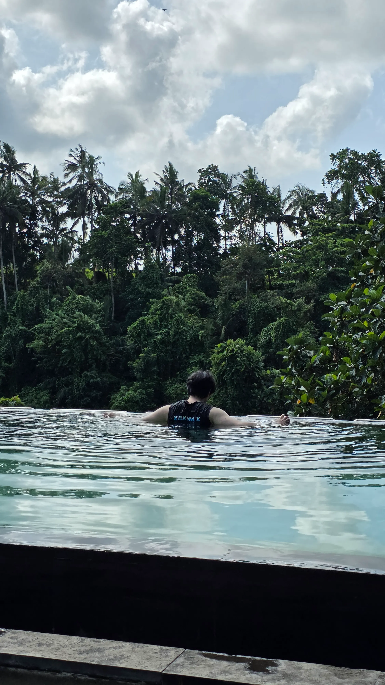
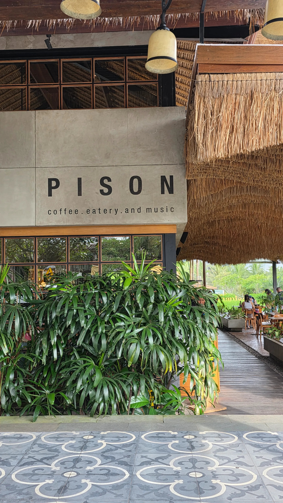
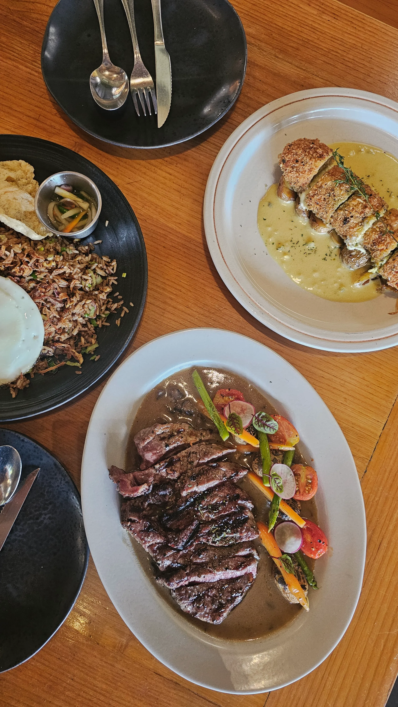
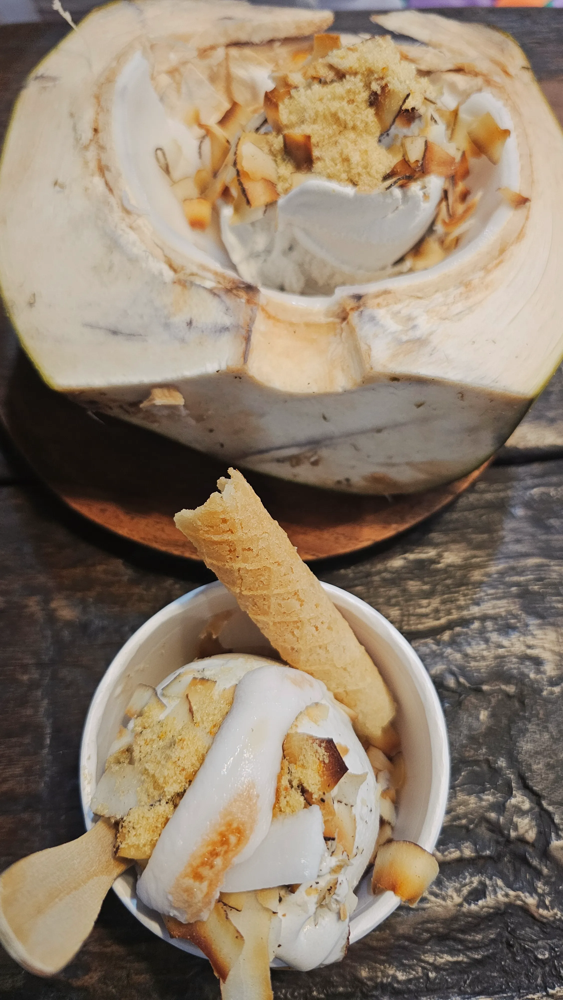

발리 여행 3일차
마라리버 사파리 롯지 조식으로 하루를 시작해서 카만달루 우붓으로 이동하고, 피손, 투키스 코코넛, 발리 스타벅스, 물의 사원까지 다녀온 3일차 기록입니다.

[발리여행 3일차] 마라리버 사파리 롯지 조식


마라리버 사파리 롯지에서 도마뱀소리와 개미 때문에 불안에 떨었지만 별 탈 없이 푹자고 일어나서
조식을 먹으러 갔습니다. 조식 오픈시간에 방문했는데 역시 한국인들밖에 없었고 기다리는 것 없이 창가쪽에
앉을 수 있었습니다.
뷔페식이고 따로 주문하는 무료 메뉴는 없었습니다. 음식 대부분은 어린이들을 위한 메뉴들이 많았고
맛은 평범했습니다. 하지만 이 곳은 사자부부 바로 옆에서 밥을 먹는게 유명한 곳이라 조식은 무조건 먹는 것을 추천드립니다.
처음에는 사자부부가 나타나지 않아서 뭔가 싶었는데 음식을 가지고 오니 사자부부가 나타났습니다. 사자와 함께 사진도 찍을 수 있고
색다른 경험이라 아주 좋았습니다.
카만달루 우붓 체크인


카만달루 우붓은 우붓 메인거리에서 약간 떨어져있는 곳에 있는 고급 리조트입니다. 원래는 아주 넓은 부지를 가지고 있었는데 현재는 공사중인지 매도한 것인지는 모르겠으나 반은 운영을 안하고 있습니다. 때문에 이 곳에 있는 계단식 논인 뜨갈랑랑과 비슷한 산책로를 이용할 수 없어서 아쉬웠습니다. 숙소 컨디션은 고급리조트라서 넓고 좋았고 쾌적했습니다.
피손 우붓


점심은 우붓에서 제일 유명한 음식점인 피손으로 다녀왔습니다. 카페와 바, 식당까지 같이 하는 것 같았는데 발리에서 웬만한 곳들은 대부분 이런식으로 운영하는 것 같습니다. 야외석이 유명한 곳이지만 발리에서 귀한 에어컨을 만끽할 수 있는 실내에서 식사를 추천합니다. 개인적으로 맛은 평범했는데 발리밸리 걱정 없이 편히 음식을 먹을 수 있을 정도로 깔끔한 식당과 음식들이 마음에 들어 추천합니다.
투키스 코코넛

점심먹고 우붓 거리 돌아다니면서 구경도 하다가 우붓에 투키스 코코넛이라는 코코넛 아이스크림, 디저트, 음료를 파는 곳으로 후식을 먹으러 갔습니다. 코코넛을 별로 좋아하지는 않지만 달달한 아이스크림이라서 시원하게 먹을 수 있었습니다. 다만 가게에 에어컨이 없어서 더운데 억지로 시원해지는 느낌이었고 더위가 해소되지 않아서 아쉬웠습니다.
발리 스타벅스 & 물의 사원


물의 사원이라는 곳을 들려보려다가 우연히 찾은 스타벅스입니다. 에어컨이 나와서 너무 행복했고 마침 자리도 있어서 더 좋았습니다. 들어와서 보니 이곳이 물의 사원 입구였고 또 찾아보니 굳이 돈내고 들어갈 필요는 없다고해서 시원하게 아아를 마시면서 물의 사원을 구경했습니다. (몰랐는데 여기가 포토스팟)